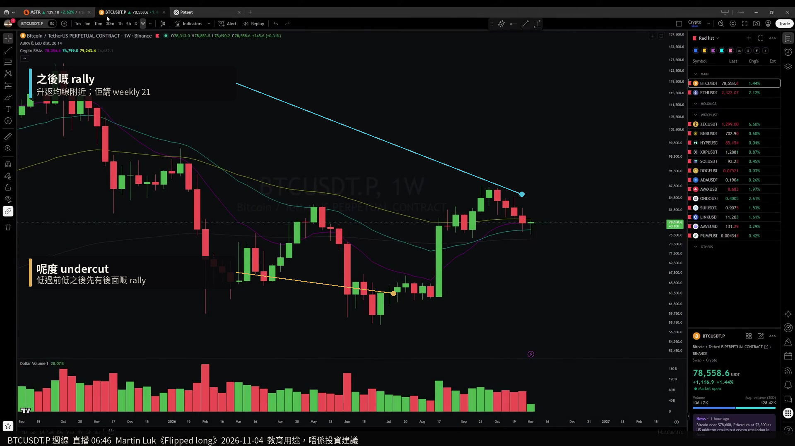
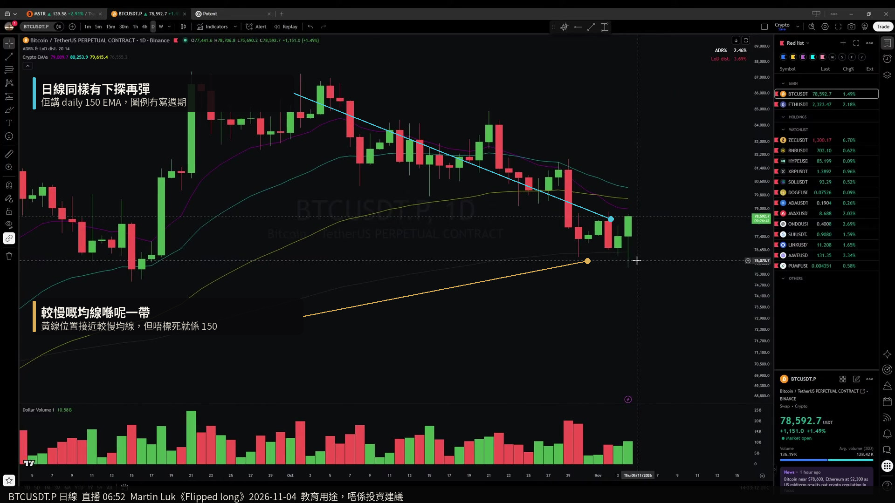

概要
佢鍾意呢段加密嘅 undercutting rally
06:52 至 06:59，佢話好鍾意呢段 cryptos 嘅 undercutting rally：週線 21，同埋日線 150 EMA。講呢句之前大約 06:40–06:47 畫面係 BTCUSDT.P 週線；講緊嗰陣已經切到日線。本頁用呢兩幅圖一齊讀。
圖例只顯示均線數值，冇寫 21 或者 150 呢啲週期。所以註解會指住 undercut、rally，同較慢均線嘅位置，但唔會標死邊一條線就一定係 21 或者 150。
圖一
BTCUSDT.P 週線：undercut 之後嘅 rally
直播 06:46

原話
I really like this cryptos undercutting rally on the weekly 21 and so also the daily 150 EMA.
我好鍾意呢段加密嘅 undercutting rally，喺週線 21，同埋日線 150 EMA。
點樣讀
週線見到價格低過前低（undercut），之後先有一段升返均線附近嘅 rally。呢個就係佢講「undercutting rally on the weekly 21」嗰陣，畫面先出示嘅結構。
圖例冇寫均線週期，所以本頁唔會指住某一條顏色就肯定係 21。重點係位置同形態：undercut 之後再升返均線附近。
圖二
BTCUSDT.P 日線：同樣有下探再彈
直播 06:52

原話
…and so also the daily 150 EMA.
……同埋日線 150 EMA。
點樣讀
日線見到價格由高位回落，靠近較慢嘅黃線之後再彈。佢將呢段同「daily 150 EMA」一齊講。
黃線走勢較慢，數值亦接近圖例入面較低嗰條 Crypto EMA，有可能就係佢講嘅 150，但圖例冇寫週期，本頁唔當已經核實。讀呢幅圖時，重點仍然係位置：下探到較慢均線一帶再彈。
附註
注意事項
- 呢一句好短，而且冇講倉位或者買賣價，本頁只拆佢指住嘅形態同均線位置。
- 06:15 附近曾經出現 ETH 1 小時，09:00 附近亦有加密週線，但呢句對白對應嘅畫面係 BTC 週線同日線。